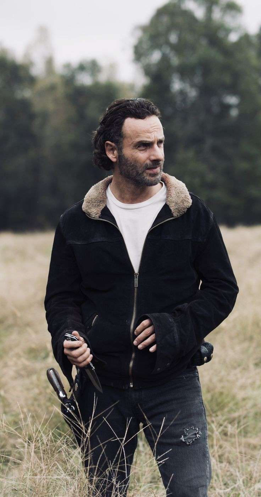
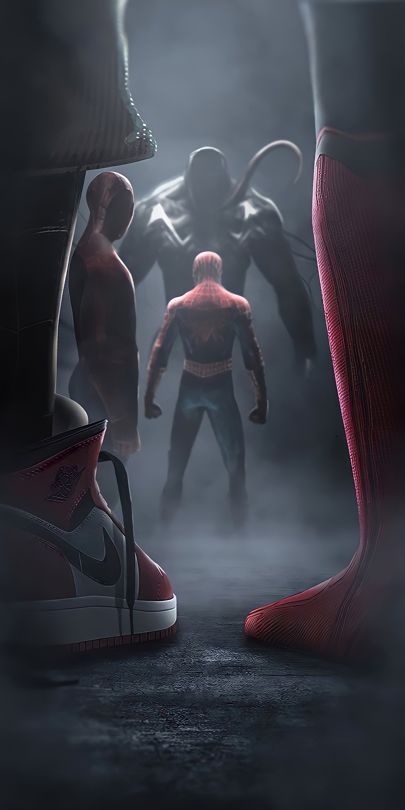
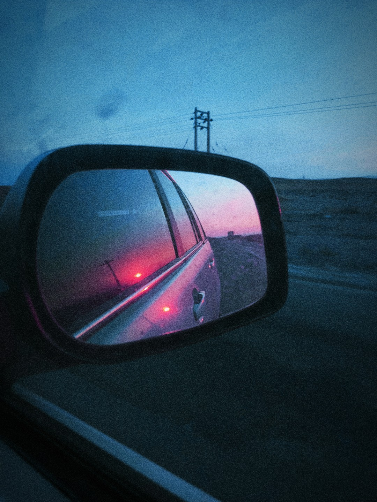

|

|
Andrew Lincoln is a character in the animated series The Walking Dead, born in London to a South African mother who worked as a nurse, and her father, a British, civil engineer.
In April 2010, Lincoln played Rick Grimes, in the series The Walking Dead, and narrated the 2010 San Diego Comic-Con Project. |
 |
kratos character in the game God of War which was first released in 2005 for console ps1 by Santa Monica Company |
|  |
Peter Parker famous character Spiderman, created in the Marvel Universe by Stan Lee in 1962, currently has many fans. |
|  |
sunset view on sabzevar road taken by myself . Sabzevar is one of the beautiful cities of Khorasan Razavi |
Back